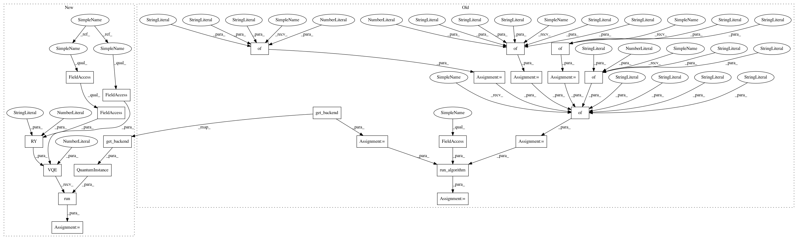

dc045bebd58dbf547728ff2f34e1d9a0fcb916f9,test/aqua/test_partition.py,TestSetPacking,test_partition_vqe,#TestSetPacking#,55
Before Change
def test_partition_vqe(self):
Partition VQE test
algorithm_cfg = {
"name": "VQE",
"max_evals_grouped": 2
}
optimizer_cfg = {
"name": "SPSA",
"max_trials": 200
}
var_form_cfg = {
"name": "RY",
"depth": 5,
"entanglement": "linear"
}
params = {
"problem": {"name": "ising", "random_seed": 100},
"algorithm": algorithm_cfg,
"optimizer": optimizer_cfg,
"variational_form": var_form_cfg
}
backend = BasicAer.get_backend("qasm_simulator")
result = run_algorithm(params, self.algo_input, backend=backend)
x = sample_most_likely(result["eigvecs"][0])
self.assertNotEqual(x[0], x[1])
self.assertNotEqual(x[2], x[1]) // hardcoded oracle
After Change
x = sample_most_likely(result["eigvecs"][0])
np.testing.assert_array_equal(x, [0, 1, 0])
def test_partition_vqe(self):
Partition VQE test
aqua_globals.random_seed = 100
result = VQE(self.qubit_op,
RY(self.qubit_op.num_qubits, depth=5, entanglement="linear"),
SPSA(max_trials=200),
max_evals_grouped=2).run(
QuantumInstance(BasicAer.get_backend("qasm_simulator")))
x = sample_most_likely(result["eigvecs"][0])
self.assertNotEqual(x[0], x[1])
self.assertNotEqual(x[2], x[1]) // hardcoded oracle
In pattern: SUPERPATTERN
Frequency: 3
Non-data size: 23
Instances
Project Name: Qiskit/qiskit-aqua
Commit Name: dc045bebd58dbf547728ff2f34e1d9a0fcb916f9
Time: 2019-11-08
Author: manoel@us.ibm.com
File Name: test/aqua/test_partition.py
Class Name: TestSetPacking
Method Name: test_partition_vqe
Project Name: Qiskit/qiskit-aqua
Commit Name: dc045bebd58dbf547728ff2f34e1d9a0fcb916f9
Time: 2019-11-08
Author: manoel@us.ibm.com
File Name: test/aqua/test_graph_partition.py
Class Name: TestGraphPartition
Method Name: test_graph_partition_vqe
Project Name: Qiskit/qiskit-aqua
Commit Name: d04a79bb822fe39a32ebf103b30736ea72a4c29d
Time: 2019-11-07
Author: manoel@us.ibm.com
File Name: test/aqua/test_clique.py
Class Name: TestClique
Method Name: test_clique_vqe
Project Name: Qiskit/qiskit-aqua
Commit Name: dc045bebd58dbf547728ff2f34e1d9a0fcb916f9
Time: 2019-11-08
Author: manoel@us.ibm.com
File Name: test/aqua/test_partition.py
Class Name: TestSetPacking
Method Name: test_partition_vqe